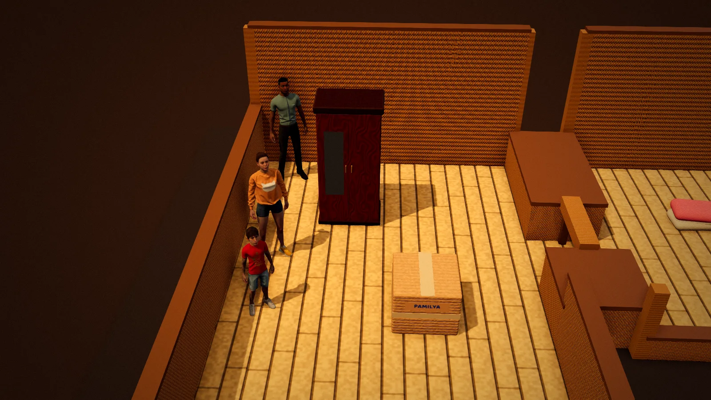

Lipat-Bahay
A family moves house, one push at a time

PuzzleKeyboard · Touch · ControllerFree, in the browser
Play Lipat-BahayAbout the game
Lipat-bahay is what Filipinos call moving house. In this game a family packs up and moves again and again: from Lola's house in the province, to a boarding house in Sampaloc, an apartment in Tondo, a condo on the twenty-first floor, and finally home again in time for Christmas. Along the way Nanay, who works in Dubai, keeps in touch by video call until the day she comes home.
Each room is a pushing puzzle, in the tradition of the classic warehouse box-pusher, but with a twist: you are not one worker, you are a family, and each member is different. The story mode has 36 rooms over six chapters, with a short scene before each, in Filipino or English.
How to play
Every room has furniture and boxes to move onto their marked spots. You control one family member at a time and can switch whenever you like. You can only push, never pull, so a box shoved into a corner stays there.
- Tatay (Dad) is the strongest, with a strength of 3.
- Ate Liza (big sister) has a strength of 2, enough for boxes.
- Migo, the youngest, has a strength of 1, but he is small enough to squeeze through gaps the others cannot.
The key idea is teamwork. People lined up directly behind each other push together and add their strength, so a heavy cabinet that none of them can move alone may slide when two or three line up. Fragile things, like the TV, the glass cabinet and Lola's clay jars, only move when pushed with exactly their weight; too much force and they will not budge. Switches on the floor open doors for as long as someone, or something, is standing on them. Later on, things on wheels roll until they hit something, and at one point the neighbors come to help carry a whole bahay kubo (bamboo hut).
- Keyboard: arrow keys or WASD walk and push. Tab, E or Q switch person, or press 1 to 5. Z, U or Backspace undoes, R restarts the room, H asks for a hint, C turns the camera.
- Phone and tablet: tap a person to switch to them, tap the floor to walk there, tap a piece next to you to push it, or swipe to step.
- Controller: D-pad or stick moves, the bumpers switch person, B undoes, Y gives a hint, X restarts.
Beyond the story there is Lipat-lipat, an endless run of moving jobs with surprises like a stray dog, a brownout or a truck on a timer; Araw-araw, one new room a day for everyone; and Gawa Mo, a room editor whose creations you can share as a link. Two players can also share one keyboard or use two controllers, each moving their own person.
Tips
- Before moving anything, look at where each piece needs to go and which side you will have to push it from. Push it into a wall too early and that side is gone.
- Ask who is actually needed. Some rooms look like they need Tatay but are really about getting Migo through a gap to a switch.
- When something will not move, count the strength in the line. Adding Ate behind Tatay often makes the difference.
- For fragile things, line up exactly the right people. Two too many is as bad as one too few.
- If you are truly stuck, ask for a hint once, then try to finish on your own.
Moving house, and the family that waits
Moving is part of many Filipino family stories. People leave the province for Manila to study or work, and a student's first home in the city is often a boarding house; Sampaloc, close to the many universities of Manila's University Belt, is known for them. Families move again as jobs and rents change, usually with relatives lending a hand.
Nanay working abroad is a familiar story too. Many Filipinos work overseas, in the Middle East, Asia, Europe and elsewhere, to support their families at home, and for many households the video call has become part of daily life. Christmas is the season many most hope to come home, and a family complete again at Christmas is about as happy an ending as a Filipino story can have.
And when the neighbors gather to carry the bahay kubo, that is the old custom of bayanihan, where a whole community lifts a house on bamboo poles and walks it to its new spot.